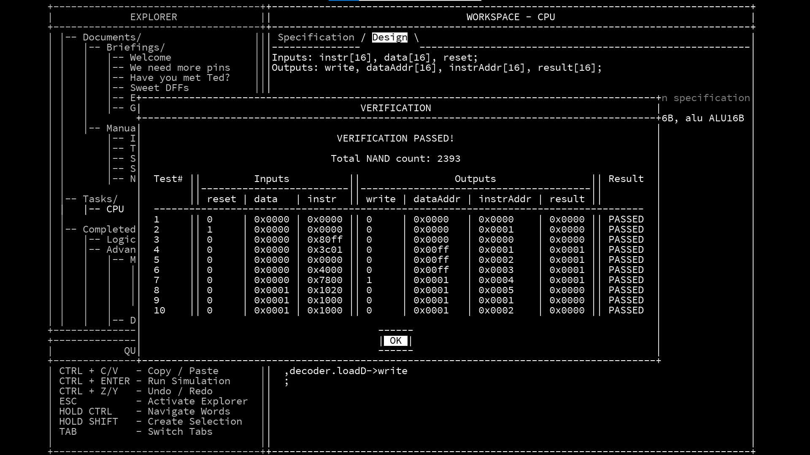

不知道取啥题目，试一下2级标题大小
今天（应该说是昨天）折腾了巨久怎么样基于github pages和Jekyll，搭建一个网页，现在终于基本上差不多弄好了，虽然是很简陋的gitbook的形式，不过也足够用了。其实我现在还是不知道Jekyll是什么，但是它能用2333.
现在想整理一下应该怎么用，以免以后忘记了。
一、新建一个github仓库，仓库的名字是username.github.io。
二、从网上找一个模板，复制到自己的仓库里面。仓库的结构看这个网址:目录结构 - Jekyll • 简单静态博客网站生成器 (jekyllcn.com)
三、index.md readme.md是主页内容。
四、_pages文件夹里放网页
这个开始的格式挺重要的(其实就是文档属性)。 每一个网页都必须有文档属性，不然无法显示。
---
title: github pages搭建
author: Peter
date: 2023-07-03
category: Jekyll
layout: post
---
title就是网页的名称
别的没啥用，但是要保持这样的格式不然会报错
五、_posts文件夹就是用来放博客了，名称要求必须是xxxx-xx-xx-name.md，里面的开头也是必须有文档属性。属性title值就是这篇博客的标题了。
---
title: 一定要这样写
author: Peter
date: 2021-08-10
category: Jekyll
layout: post
---
下面的内容用markdown写就可以了。
六、网页的本地测试具体看这个网站: Testing your GitHub Pages site locally with Jekyll - GitHub Docs
按照上面的内容装了一大堆东西以后，以后要本地测试，就只需要：
在网页文件夹里打开git bash
然后bundle install
然后bundle exec jekyll serve
就可以在http://localhost:4000查看网页了。
七、网页URL的配置在_config.yml文件中，记得配置
八、以后每次写完博客，git push上去就可以更新了，非常的方便，而且可以在obsidian里写博客，挺好的。
九、怎么插图片
看这个链接，很简单：jekyll 添加多媒体图片和附件 (abaojin.github.io)
下面我插了一张图作为示例。 
十、参考的教程：
Setting up a GitHub Pages site with Jekyll - GitHub Docs
Jekyll Gitbook Theme · Jekyll Gitbook (sighingnow.github.io)
想弄好博客，也可以多看看别人的博客源代码：